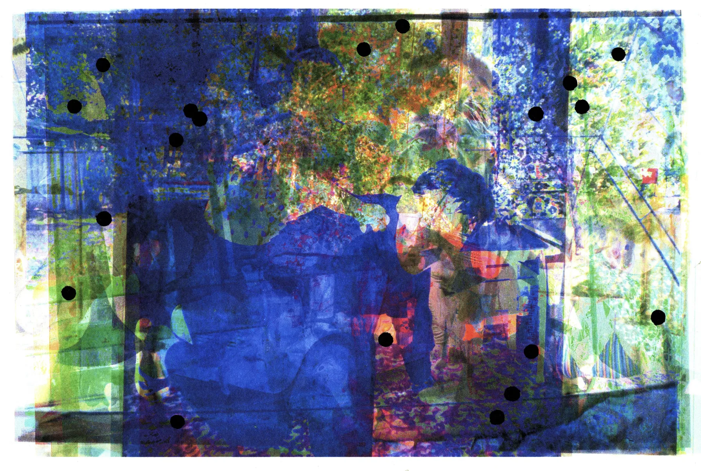

Menu
Menu
Blind zone
Personal archive, digital collage, print process
2022

Home, family, close relatives, and family friends are often the places where violence occurs—it happens to people at a young age; we witness violence against our mothers, grandmothers, sisters, and brothers. I often think about what family photo archives mean to me, and how much they fail to convey: everything hidden beneath staged shots or smiles for the home camera’s lens, everything that exists only in memory, and is sometimes completely erased and blurred by our subconscious.
Many things resurface years later—through the subconscious, through triggers, through the building of warm and trusting relationships—things that happened within the walls of family homes, our summer cottages, and the homes of our parents’ friends. All those days were captured in one way or another on camera and film. Even now, I look at these photos, and they seem to be in another dimension—I/we are there, sitting next to those who committed the abuse, with those who experienced it during the same periods of time, or we ourselves were experiencing it and didn’t yet understand what we were going through. We are there, but history seems to have changed, to be in a different light, to have shifted.
And now you’re in this resonance of half-erased memories, blurred events, faces that your subconscious decided to erase from memory, strange sensations—as if you’re there, little, still hugging the people who, at those very moments, were destroying your own memory.
This work—it’s not about individual experiences, but mine, my friends, my loved ones, and my relatives.
NeUyat (shameless), Tashkent, UZ
2022